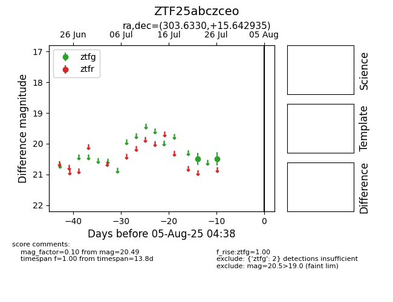

Target ZTF25abczceo at 2025-08-05 04:38, see:
FINK: fink-portal.org/ZTF25abczceo
Lasair: lasair-ztf.lsst.ac.uk/objects/ZTF25abczceo
ALeRCE: alerce.online/object/ZTF25abczceo
alt names
ZTF25abczceo (ztf,fink)
coordinates:
equatorial (ra, dec) = (303.6330,+15.64294)
galactic (l, b) = (56.6577,-10.42877)
photometry
last ztfg=20.49
2 ztfg detections
